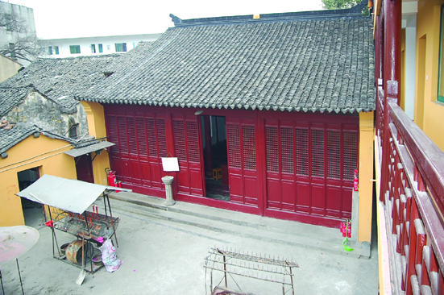

嘉兴市文物保护网 · 市级文物保护单位 · 2014-06-17 · 原文

冷仙亭位于嘉兴市南湖区建设街道丁家桥社区秀州路偏北原地名项家漾，始建于明崇祯八年（1635），清道光二十八年（1848）重建。冷谦，字启敬，武陵人，明洪武元年（1368）为协律郎，后侨居嘉兴，随知识渊博的海云沙陀求学，以博学多才闻名，并精通医药秘方，名望甚大，得嘉兴民间爱戴，其居地称为冷仙亭，后改为冷协律祠，专门祭奠冷谦。冷仙亭建筑原有仙家殿、玉皇殿、斗母殿、冷仙亭及清泉一剑池古井。仙家殿、亭等现已无存，仅存斗母殿，殿坐北朝南，平面呈正方形，面积约600平方米，三开间，五进深，为抬梁式，金瓜柱，不施斗拱。小方格落地门窗，墁地铺方砖。殿前有古井一口。今属嘉兴市佛教协会，供有四方三圣（阿弥陀佛、观世音、大势至），住有僧人。冷仙亭在嘉兴历史上有一定影响力，对于研究地方史以及宗教史具有较高的历史价值。1981年公布为嘉兴市级文物保护单位。